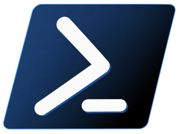
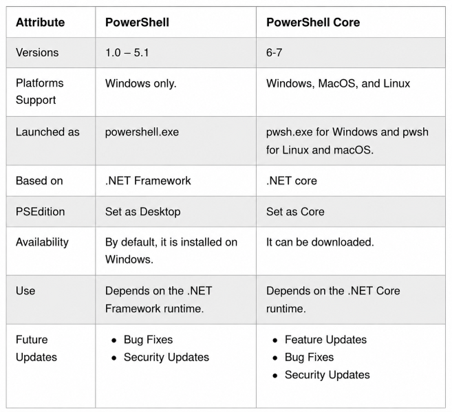
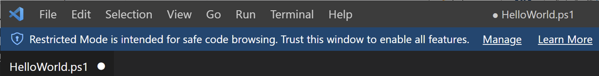
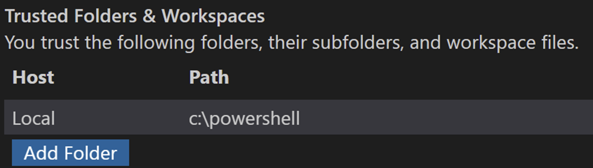
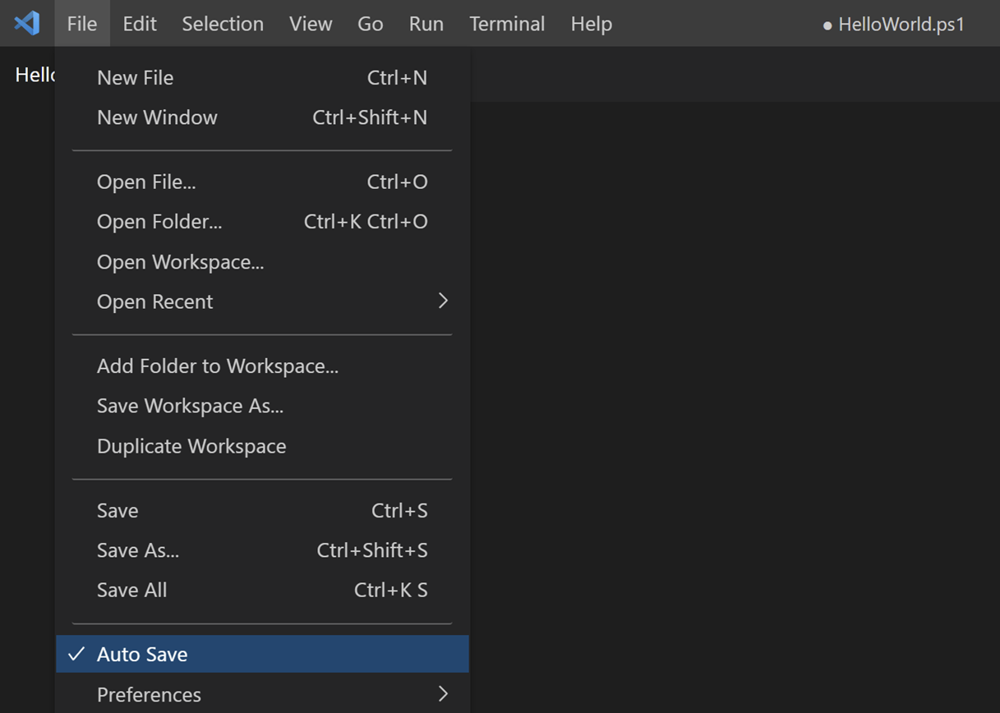
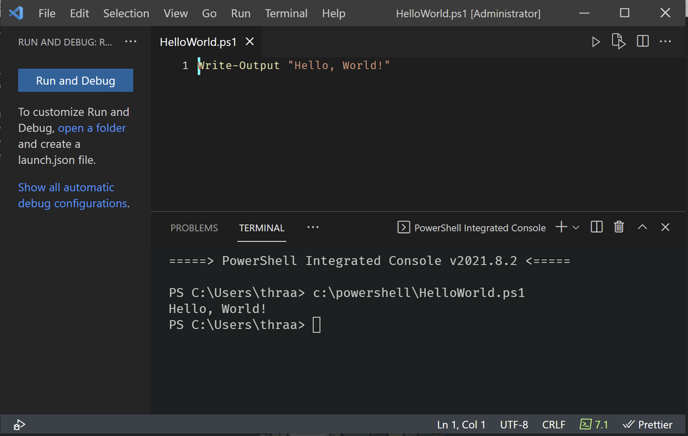

Learning objectives
- Explain why organisations automate repetitive work.
- Identify the main PowerShell environment and help commands.
- Run basic commands safely in a personal practice environment.
Prerequisites
- Access to PowerShell and a personal practice folder.

Welcome to learn more about Automation and Scripting.
Why automation?
Automation is the practice of using technology and processes to perform tasks with minimal human intervention. There are several compelling reasons why automation is widely adopted and considered essential in various fields:
Efficiency: Automation can significantly increase efficiency by completing tasks faster and with fewer errors compared to manual processes. It allows organizations to do more with less, which can lead to cost savings and improved productivity.
Consistency: Automated systems perform tasks consistently and according to predefined rules, ensuring that each execution is the same. This reduces the variability and uncertainty associated with manual work.
Accuracy: Automation reduces the risk of human error. Repetitive tasks that are prone to mistakes, such as data entry, can be automated to ensure data accuracy.
Cost Savings: By automating routine tasks, organizations can reduce labor costs, as they require fewer human resources to perform these tasks. Additionally, automation can lead to energy savings and increased operational efficiency.
Scalability: Automated processes can easily scale to handle increased workloads without a proportional increase in labor. This makes automation well-suited for businesses and operations that need to grow and adapt to changing demands.
24/7 Availability: Automated systems can work around the clock, providing services and support without human intervention. This is especially important for tasks that require continuous monitoring or rapid response.
Risk Reduction: Automation can help mitigate risks by enforcing security policies, conducting regular backups, and ensuring compliance with regulatory requirements.
Faster Execution: Automation can complete tasks in a fraction of the time it takes for humans to perform the same tasks. This is critical for processes that require rapid responses or real-time decision-making.
Data Analysis: Automated data collection and analysis can identify trends, patterns, and anomalies in large datasets, allowing organizations to make data-driven decisions and gain insights they might otherwise miss.
Improved Customer Experience: Automation can enhance the customer experience by providing faster response times, self-service options, and personalized interactions, all of which contribute to customer satisfaction.
Competitive Advantage: Organizations that embrace automation can gain a competitive edge by streamlining operations, offering faster services, and responding more quickly to market changes.
Reduced Repetitiveness: Automation frees up human workers from monotonous, repetitive tasks, allowing them to focus on more creative and strategic aspects of their roles.
Compliance and Reporting: Automation can assist in maintaining accurate records and generating compliance reports, which is particularly important in regulated industries.
Adaptation to Technology Trends: As technology evolves, automation enables organizations to adopt and adapt to emerging technologies and trends quickly.
Examples:
servers and clients from bare metal to cloud
virtual machines, containers
network, network devices, domains, network services
operating systems
software installations
In essence, automation empowers organizations and individuals to work smarter, not harder. It is a vital tool for increasing productivity, reducing errors, and staying competitive in today's fast-paced and technology-driven world.
Infrastructure as Code (IaC)
Infrastructure as Code (IaC) is an approach to managing and provisioning infrastructure using code and automation. In the context of IaC, "short infrastructure as code" typically means writing concise and efficient code to define, configure, and manage infrastructure resources.
Why scripting?
Scripting is a method of computer programming that involves writing scripts, which are sets of instructions that are executed in a specific order. Scripting is commonly used for various purposes in the world of technology and computing. Here are some reasons why scripting is a valuable approach:
Automation: Scripts can automate repetitive tasks. This is particularly useful in system administration, where scripts can be used to perform routine maintenance, manage files, and more. It can save time and reduce the risk of human error.
-Customization: Scripts allow for high levels of customization. You can create scripts to tailor software or processes to your specific needs, making them more efficient and suitable for your particular use case.
Rapid Development: Scripting languages often have less rigid syntax and require fewer lines of code compared to traditional programming languages. This can lead to faster development and prototyping.Interoperability: Scripts can act as glue code, enabling different software systems and components to work together. They can bridge the gap between different programming languages or applications, making it easier to integrate them.Easy to Learn: Many scripting languages are designed to be relatively easy to learn and use, making them accessible to a wide range of users, including those who may not have a strong programming background.Debugging and Maintenance: Scripts are typically easier to debug and maintain than larger, compiled applications. You can often modify a script quickly to address issues or make updates.Script Libraries: Many scripting languages have extensive libraries and frameworks, which can significantly speed up development by providing pre-built functions and modules.Portability: Scripts are often portable, as they can run on different operating systems and platforms without much modification. This makes them versatile for various environments.Prototyping: Scripting is excellent for quickly prototyping ideas. You can create a functional proof of concept with minimal effort, allowing you to test and refine your ideas before committing to full-scale development.Education and Learning: Scripting languages are often used as entry points for individuals learning to program. They provide a foundation for understanding programming concepts and syntax.
Common scripting languages include Python, JavaScript, Ruby, and Bash. The choice of scripting language depends on the task at hand, the ecosystem you are working in, and personal preference.
Why PowerShell?
Learning PowerShell 7, the cross-platform edition of PowerShell, is valuable for several reasons:
PowerShell is a
command-line shell and a scripting languageused for automation.Cross-Platform Compatibility: PowerShell 7 works on multiple platforms, including Windows, Linux, and macOS. This cross-platform compatibility is especially important in today's diverse computing environments, where administrators and developers may need to manage systems on different operating systems.Scripting and Automation: PowerShell is a powerful scripting language that allows you to automate a wide range of tasks, particularly in the context of system administration. You can script tasks like user management, system configuration, and file operations, making it a valuable tool for IT professionals.Interoperability: PowerShell can interact with a variety of technologies and services, including .NET, REST APIs, and other programming languages. This makes it a versatile tool for integrating and automating tasks across different applications and services.Manageability: It is known for its robust management capabilities. You can use PowerShell to manage not only the Windows operating system but also various Microsoft server products like Active Directory, Exchange, and SharePoint.Security: PowerShell includes features for secure administration. It allows you to restrict and audit script execution to enhance system security.Community and Resources: PowerShell has a large and active community, which means you can find a wealth of resources, scripts, and modules created and shared by others. This can significantly accelerate your learning and productivity.Microsoft Ecosystem: If you work with Microsoft products, PowerShell is an essential tool. Many Microsoft services and applications, such as Azure, Office 365, and Windows Server, offer extensive PowerShell support for management and automation.Job Opportunities: Knowledge of PowerShell is in high demand in the job market, especially for roles related to system administration, cloud computing, and DevOps. Learning PowerShell can enhance your career prospects in IT.Learning Path to DevOps: PowerShell is often a stepping stone for those interested in pursuing a DevOps career. It helps bridge the gap between traditional IT operations and development by automating infrastructure provisioning and configuration.Scripting Best Practices: Learning PowerShell can help you develop scripting best practices, which can be applied to other scripting and programming languages as well. This can improve your overall programming skills.
In summary, learning PowerShell is beneficial for anyone involved in system administration, IT management, and automation, as well as those interested in a career in DevOps or cloud computing. It offers cross-platform capabilities, automation power, and a supportive community, making it a valuable addition to your skill set.
Is PowerShell popular?
Developer Survey - Most Popular technologies
Yes, PowerShell is a popular scripting and automation language, especially within the Windows ecosystem. It has gained significant popularity among system administrators, IT professionals, and developers for various reasons:
Native to Windows: PowerShell is integrated into Windows operating systems, making it readily available for system administration, automation, and management of Windows-based environments.Versatile Scripting Language: PowerShell is a versatile language that can handle a wide range of tasks, from simple automation and management to complex system administration and configuration tasks.Automation Capabilities: PowerShell is designed for automation, enabling users to create scripts and automation workflows to perform repetitive tasks, saving time and reducing the potential for errors.Integration with Microsoft Products: PowerShell has robust integration with Microsoft products like Windows Server, Active Directory, Exchange, SharePoint, and Azure, making it an essential tool for managing Microsoft-centric environments.Extensive Ecosystem: PowerShell has a vast ecosystem of modules and libraries available, both from Microsoft and the community, which extends its capabilities and provides solutions for various scenarios.Active Community: PowerShell has a dedicated and active community of users, scripters, and developers who share knowledge, scripts, and best practices, contributing to its popularity.Security and Compliance: PowerShell has built-in security features and auditing capabilities, which are crucial for maintaining the security and compliance of Windows-based systems.Cross-Platform Support: PowerShell 7 expanded PowerShell support to other operating systems such as Linux and macOS, making it more versatile.Development for Azure Functions: PowerShell is one of the languages supported for creating Azure Functions, enabling serverless computing solutions in the Microsoft Azure cloud platform.Active Development: Microsoft actively develops and enhances PowerShell, providing frequent updates and improvements.
Overall, PowerShell is a powerful tool for managing and automating Windows-based systems and services. Its extensive capabilities, strong community support, and integration with Microsoft technologies contribute to its popularity among IT professionals and developers.
Is Visual studio popular?
Developer Survey - Integrated development environment
Yes, Visual Studio is a highly popular and widely used integrated development environment (IDE) created by Microsoft. Visual Studio provides a comprehensive set of tools and features for software development, making it a popular choice among developers for a variety of reasons:
Robust Development Environment: Visual Studio offers a feature-rich and powerful development environment that supports multiple programming languages, frameworks, and platforms.Language Support: It provides extensive support for popular programming languages like C#, C++, Python, JavaScript, and more, making it suitable for a wide range of development projects.Cross-Platform Development: Visual Studio supports cross-platform development, allowing developers to create applications for Windows, macOS, Linux, web, mobile, cloud, and IoT platforms.Rich Ecosystem: Visual Studio has a vast ecosystem of extensions and add-ons available through the Visual Studio Marketplace. These extensions can enhance the IDE's capabilities and adapt it to various development scenarios.Integrated Tools: Visual Studio integrates tools for debugging, code analysis, version control (with Git and TFS support), testing, and more, streamlining the development workflow.Productivity Features: It includes features like code completion, refactoring, IntelliSense, and code templates to improve developer productivity.Cloud Development: Visual Studio offers tools and services for cloud development, including integration with Microsoft Azure, which is valuable for cloud-based application development.Team Collaboration: Visual Studio Team Services (now Azure DevOps) provides collaboration tools for teams, enabling efficient project management, version control, continuous integration, and more.Community Edition: Microsoft offers a free Community edition of Visual Studio with a comprehensive set of features, making it accessible to individual developers and smaller teams.Enterprise Solutions: Visual Studio also provides enterprise-level solutions with features for large-scale software development, such as Visual Studio Enterprise and Visual Studio for Mac.Active Community and Support: Visual Studio has a large and active community of developers, along with Microsoft's support, making it easy to find resources, tutorials, and solutions to development challenges.Popular Platforms and Frameworks: Visual Studio is widely used for creating Windows applications, web applications, mobile apps (using Xamarin), game development (Unity), and much more.
PowerShell Introduction
Whether you work in DevOps or SysAdmin roles or want to add PowerShell to your digital toolbox, this lesson’s content will get you started with this powerful command-line tool.
PowerShell was introduced to the Windows operating system in 2006 and has since become a popular tool for automating many Windows tasks. While the shell focuses on Windows administration, PowerShell command-line applications are now available to install on the Mac OS and Linux operating systems.
While most computing interfaces involve a GUI, Graphical User Interface, there is a clear reason why developers and administrators still use command-line tools like PowerShell: they are just better at certain tasks.
In addition to its robust features for system management and automation, PowerShell has a vibrant community, extensive documentation, and strong support from Microsoft. Whether you're a seasoned IT professional or just getting started, PowerShell is a valuable tool for simplifying tasks, improving efficiency, and managing systems effectively.
- an object-oriented
- shell and scripting language for Microsoft Windows.
- a CLI windows administration (configuration) platform
- command line interface (CLI).
- interface to .NET Framework
- pipelines
- built-in help: Get-Help
- can also script
PowerShell Versions?

older versions of Windows Server are tied to older PowerShell versions
PowerShell 1.0- PowerShell version 1.0 basic version
- Supports Windows XP SP2, Windows Server 2003 SP1, and Windows Vista.
PowerShell 5.1- pre-installed: Windows Server 2019 and Windows 10/11
PowerShell 6.0- Cross Platform (Free and Open Source)
- Many Windows PowerShell 5.1 modules can be used through the compatibility layer, but compatibility is not guaranteed.
- not (yet) installed by default on Windows Pro/Server
- built on .NET core: open-source successor to .NET Framework.
PowerShell 7.x (built on modern .NET)- not yet installed by default
- cross-platform (linux, macos), open source
- .NET
- Run side-by-side with Windows PowerShell 5.1
- Compatibility and available cmdlets vary by platform and installed modules.
PowerShell 7 is the cross-platform, open-source edition of PowerShell, built for heterogeneous environments and hybrid cloud management.
Case Sensitivity
Get-help about_Case-Sensitivity
- PowerShell cmdlet names, parameter names, and variable names are case-insensitive by default on Windows, Linux, and macOS.
- Filesystem path case sensitivity depends on the operating system and volume: Linux filesystems are usually case-sensitive, while macOS volumes are often case-insensitive by default but can be case-sensitive. Unix environment variable names are case-sensitive.
Tab completion
Tab completion helps you enter commands, parameters, paths, and variable names without typing every character. Type the beginning of an item and press Tab. PowerShell completes the matching text; press Tab again to cycle through other matches. This helps you discover valid names and reduces typing mistakes.
Small example
Type Get-Ch in a PowerShell terminal, then press Tab until PowerShell completes the command:
Get-ChildItem
You can also complete parameters. Type Get-Date -F, press Tab, and PowerShell completes -Format:
Get-Date -Format 'yyyy-MM-dd'
Get-Date -Format returns a formatted string, not a DateTime object.
Tab completion can also complete an argument value, such as a folder path. Type the following command up to Doc, then press Tab:
Get-ChildItem -Path $HOME\Doc
On a typical Windows profile, PowerShell completes the argument to $HOME\Documents. Press Enter only after checking that the completed path is the folder you intend to inspect.
If there are several possible matches, press Ctrl+Space to open a completion menu instead of cycling through choices one at a time. For example, type Get- and press Ctrl+Space to view commands that begin with Get-; use the arrow keys to choose one and press Enter to insert it.
Use tab completion to help write a command, but still read the completed command before pressing Enter.
Modern .NET vs .NET Framework
.NET is an open-source, general-purpose development platform. Versions 5 and later run on Windows, Linux, and macOS. The name .NET Core applies to versions 1.x through 3.1; the platform was renamed .NET starting with version 5.
It offers the following features:
- Cross-Platform
- Open Source
- High Performance
- Multiple environments and development mode etc.
.NET Framework is the Windows-only implementation of the .NET platform, first released in 2002. It supports applications such as Windows Forms, WPF, and ASP.NET; it is distinct from modern .NET.
.Net (Core) Versions
| BASED ON | Modern .NET (5+) | .NET Framework |
|---|---|---|
| Open Source | Modern .NET is open source. | Certain components of the .NET Framework are open source. |
| Cross-Platform | Runs on Windows, Linux, and macOS, though application portability depends on platform-specific APIs. | .NET Framework runs on Windows. |
| Application Models | Modern .NET supports web, cloud, console, and desktop applications; Windows desktop frameworks such as Windows Forms and WPF are Windows-only. | .NET Framework supports Windows desktop and web applications, including Windows Forms and WPF. |
| Installation | Modern .NET is packaged and installed independently of the underlying operating system. | .NET Framework is installed as part of Windows. |
| Support for Micro-Services and REST Services | Both platforms can be used to build web services and REST APIs; modern .NET is cross-platform and commonly used for containerized services. | .NET Framework can host web services and REST APIs, but it runs only on Windows. |
| Performance and Scalability | Performance and scalability depend on the application, libraries, and configuration. | Performance and scalability depend on the application, libraries, and configuration. |
| Compatibility | Modern .NET is available for Windows, Linux, and macOS. | .NET Framework is Windows-only. |
| Support | Modern .NET receives ongoing feature development. | .NET Framework 4.8.1 is maintained as a Windows component; it does not receive the same ongoing feature development. |
| CLI Tools | The .NET SDK includes cross-platform command-line tools. | .NET Framework development commonly uses Windows-based tooling; it also has command-line tools. |
PowerShell Security
PowerShell's execution policy controls the conditions under which PowerShell loads configuration files and runs scripts. Execution policies can discourage accidental execution of scripts, but they are not a security boundary and do not prevent a determined user from running malicious code. Policies can be set at different scopes, such as the current user, local machine, or process level.
Get-Help about_Execution_Policies
PowerShell execution policies - Overview
- Default
- Restricted for Windows clients.
- RemoteSigned for Windows servers.
Gets the execution policies for the current session
Get-ExecutionPolicy
Gets a full overview of the execution policies with the different scopes
Get-ExecutionPolicy -List
Scope ExecutionPolicy
----- ---------------
MachinePolicy Undefined
UserPolicy Undefined
Process Undefined
CurrentUser Undefined
LocalMachine Restricted
- MachinePolicy Set by a Group Policy for all users of the computer.
- UserPolicy Set by a Group Policy for the current user of the computer.
- Process Affects only the current PowerShell session.
- CurrentUser Affects only the current user.
- LocalMachine Default scope that affects all users of the computer.
Set the policy to Unrestricted for the LocalMachine
- Run As Administrator
Set-ExecutionPolicy Unrestricted -Scope LocalMachine
or
Set-ExecutionPolicy Unrestricted
Windows Package Manager
A tool or collection of software tools
Automating software installations:
- to install software
- easy to upgrade software
- easy to remove installed software
- a lot of configuration possibilities
More convenient than searching, downloading and clicking
Works in scripts! -> Automation
Installation Package Managers
- Winget
- Chocolatey
- Scoop
PowerShell 7 - installation
see Howto: PowerShell setup
Visual Studio Code - Installation
see Howto: VS Code setup
Windows Terminal
see Howto: Windows Terminal setup
Linux Commands in Windows
- scoop search busybox
- scoop install busybox
- scoop install nano
- scoop install vim
First script
- Start a PowerShell terminal and check the version of your PowerShell.
- PSVersion: 7+
- PSEdition: Core
pwsh.exe
$PSVersionTable
Name Value
---- -----
PSVersion 7.x.x
PSEdition Core
GitCommitId 7.x.x
OS Microsoft Windows 10.0.22621
Platform Win32NT
PSCompatibleVersions {1.0, 2.0, 3.0, 4.0…}
PSRemotingProtocolVersion 2.3
SerializationVersion 1.1.0.1
WSManStackVersion 3.0
- Make a folder c:\powershell
New-Item c:\powershell -ItemType Directory
- Go to the folder c:\powershell
Set-Location c:\powershell
- Start Visual Studio Code and create the file 'HelloWorld.ps1'
code HelloWorld.ps1
- Place the following text in the script
Write-Output "Hello World"
VS Code: Trusted Workspaces
- In Restricted Mode, Visual Studio Code may limit PowerShell script execution and other workspace features. Trust only folders you trust.

- Click Manage and add directory c:\powershell via 'Add Folder'.

restart Visual Studio Code
VS Code: Auto Save
- Enable Auto Save

Run script in VSCode

Press "Play" button.
or
Run Selection (F8)
Run script in PS Shell
- Run script with full path
- PowerShell script files normally use the
.ps1extension when invoked by path.
C:\powershell\HelloWorld.ps1
Hello World
or
.\HelloWorld.ps1
Hello World
- Make a copy of the script with spaces in the filename.
- Spaces in filenames are almost always a bad idea
Copy-Item .\HelloWorld.ps1 '.\Hello World with spaces.ps1'
- Run script with spaces in the filename
& '.\Hello World with spaces.ps1'
Hello World
Update help documentation
- Update-Help checks the version of the help files on your computer.
- Update PowerShell Help after installing PowerShell and periodically thereafter
- Run
Update-Helpin an elevated PowerShell session when required, then restart PowerShell if prompted. - Some help files are not translated to a specific language.
Update-Help -Verbose -UICulture en-US -force